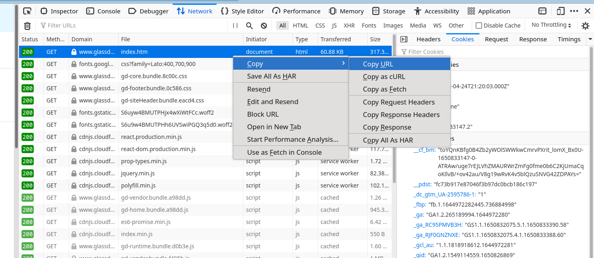

Scraping dynamic content these days is bit difficult as there are wide variety of authentication mechanisms and web server needs correct headers, session, cookies to authenticate the request. If we need to quickly scrape content just for once, implementing authenticationis an overhead. Instead, we can manually login to the website, capture an authenticated request and use it for scraping other pages by changing url/form parameters.

curl 'https://www.glassdoor.com/member/home/index.htm' -H 'User-Agent: Mozilla/5.0 (X11; Linux x86_64; rv:99.0) Gecko/20100101 Firefox/99.0' -H 'Accept: text/html,application/xhtml+xml,application/xml;q=0.9,image/avif,image/webp,*/*;q=0.8' -H 'Accept-Language: en-US,en;q=0.5' -H 'Accept-Encoding: gzip, deflate, br' -H 'Upgrade-Insecure-Requests: 1' -H 'Sec-Fetch-Dest: document' -H 'Sec-Fetch-Mode: navigate' -H 'Sec-Fetch-Site: none' -H 'Sec-Fetch-User: ?1' -H 'Connection: keep-alive' -H 'Cookie: gdId=59f52fd0-681b-4750-ac87-0ea4e2bb0022; trs=https%3A%2F%2Fwww.google.com%2F:SEO:SEO:2022-02-15+16%3A44%3A37.155:undefined:undefined; _ga_RC95PMVB3H=GS1.1.1650832075.5.1.1650833390.58; _ga=GA1.2.265189994.1644972280; indeedCtk=1frvvq2lvu2tu802; OptanonConsent=isGpcEnabled=0&datestamp=Sun+Apr+24+2022+16%3A49%3A50+GMT-0400+(Eastern+Daylight+Time)&version=6.28.0&isIABGlobal=false&hosts=&consentId=8921df85-6810-4e33-afbb-cd8ea605584e&interactionCount=1&landingPath=NotLandingPage&groups=C0001%3A1%2CC0003%3A1%2CC0002%3A1%2CC0004%3A1%2CC0017%3A1&AwaitingReconsent=false; _optionalConsent=true; _gcl_au=1.1.1818918612.1644972281; _rdt_uuid=1644972281407.f5052179-d989-406e-a45e-7d8d1017658d; __pdst=fc73b917e87046f3b97dc0bcb186c197; _pin_unauth=dWlkPVlqQTVPVGswTTJJdFpERmxZaTAwWTJZM0xXRXdNMll0WkRBNU9HWmpNV1kxTW1OaQ; _fbp=fb.1.1644972282445.736884998; ki_t=1644972283026%3B1650826872059%3B1650833392791%3B4%3B21; ki_r=; ki_s=213982%3A0.0.0.0.0%3B218147%3A1.0.0.0.2%3B221866%3A1.0.0.0.2; G_ENABLED_IDPS=google; _ga_RJF0GNZNXE=GS1.1.1650832075.4.1.1650833388.60; ki_u=b065e512-b505-4d32-6336-368b; AWSALB=lfGXf6RPXqEc7DzpDWiTmonAdzDeoaafSEPkTJfJCmjOWeAh/kfWRaJ0Upd/mCg1h86c4/5b8J6TlbLOfjlYlyDJ9q62mSZ5JFPfi21EoQqCOyXdYEoh+bM4fb8Z; AWSALBCORS=lfGXf6RPXqEc7DzpDWiTmonAdzDeoaafSEPkTJfJCmjOWeAh/kfWRaJ0Upd/mCg1h86c4/5b8J6TlbLOfjlYlyDJ9q62mSZ5JFPfi21EoQqCOyXdYEoh+bM4fb8Z; uc=44095BCBCAA84CA8700087558251F8903E1CA4A6360EDA1E2C00A6590E30A18380C5D41326111692A7DF74D2890A12CA5FCCCAABF9C11752C1BDA6A782A87CF3E6D097AC9E142A6F116191301BB3ABA90133EE10977699B2A81216B1011091A89D4876A22D5C5581608F3AFB5DED204B9404C0100A45E493FF01E1D8B559A9AFD3E798B0A7EEF48AE6F031BF682DB63B; at=wbK6TJE7CIEYBRu3BpiLgffHz2VBlCqnWeOhneIWaLKBKo9Y3I81ZUwi7UoSZ6UlRvR-xPhVHq84jhGxhJIsOwHRbZTga2oiqEn04ep_H94Nxvpnqzid8Aq2XOgRaQ_rO_-W1Jd-37UBSfQ-HoJc55jzyYrf2SEph4YZ3DDLsrLBKg0wKvuq4x1uE9UC-ewFU8S-RQ4-DmHJEW0lP6Zb_B4QMhkKBICj1h0Hfz5quqxKf7kW1FOMwv32_F5uHBjpO-JXwbsUNSGReQNGchAwZlb0tmW269MqD0TKOzW5pjMd9E2fMUCAOXZ2Frazi4LrQDL-WJN9XHFuBEdJrY-YmgzmGQVHJEXSbk9YqglgD_v8daVTmWne-NdLeT1EXkPySz8RQY6etCuZW5fjoxYhDAjvmKvKh7l-wxmDMxkb68At-TCSXZGsLl4Vd05xBuSlNDxNuaHhkfYmn-aK5OGPnfei9HIfBTijKLndpiNIUo13wBPXOx3AMRhp-km3Lq4SeQiTMKiZ2mIz0VwyLqHVHaozLApsqMHiIaohA0WmyMFKNed6DDczvDQ_9v0-C1TY2q-7hORoRlpLn9aqLG7TPhiy3_zIFQG6Lq3RuKkVgGWNdJ7eB1XyURzlgfRaBGYR4yWas1AR-Ltw6C9g0OSJCrpV9sGGPVKRiLGyTFAYkc6YlOPkpRGhdydeuGNo2xZ-5OuK9QpcGa9bigeB6rEb3f0ECD6Hno7PB7kVW5MOLqsy1wCb5pbDJov_pCcuEo9vaFcLtrKSscTeD9mqgphnyChp2jkJ7s8fhZEXnlixqRYcQ3weYNxUuOaVRTJlXVuB3pW0ipjeQPSrPyLmtmkvMTME5BDak-dEOEr7o2UH55XdljxsaoHvR5xbbNc; fpvc=1; JSESSIONID=C70C3AD88C1CAA3656156B250FB611C2; GSESSIONID=59f52fd0-681b-4750-ac87-0ea4e2bb0022+1650826866332; cass=1; gdsid=1650826866332:1650833147425:E75A578A96103E2990B8D19FEC7FCD68; _gid=GA1.2.1549114559.1650826869; asst=1650833147.2; alr=https%3A%2F%2Fwww.google.com%2F; __cf_bm=toYQnKBfg0B4Zb2yWOlSWWkwCmrvPXrit_lomX_Bx0U-1650833147-0-ATRAw/uge7rEJLVhZMAURWrZmFg0fme0b6C2KjUmaCqoKllvB/+ov42au/V8g19wRvK4v5blQzuSNVG42ZDPAYs=; SameSite=None; bs=6YFiSL-CrQmuCRENEQSbBQ:9Y7jayT3y1qqRk_f3un-Haz_MP2OgXpzSPXOR6-1K-S0lyulHk4NLUqcbs2tx1zF2MQQ5MDfGwkddbHYAb2UvvvOzoErN3DoEsD_UhEKgrY:gH0JZN0DYiXDEHZlh8aXQHEyDtNqtN5zNCU1ae7Yo3k; _dc_gtm_UA-2595786-1=1' -H 'TE: trailers'
We can directly convert it to python requests using uncurl.
pip install uncurl
Install clipit (a clipboard manager utility)
For Arch linux:
yay -S clipit
$ clipit -c | uncurl 1 ↵
requests.get("https://www.glassdoor.com/member/home/index.htm",
headers={
"Accept": "text/html,application/xhtml+xml,application/xml;q=0.9,image/avif,image/webp,*/*;q=0.8",
"Accept-Encoding": "gzip, deflate, br",
"Accept-Language": "en-US,en;q=0.5",
"Connection": "keep-alive",
"Sec-Fetch-Dest": "document",
"Sec-Fetch-Mode": "navigate",
"Sec-Fetch-Site": "none",
"Sec-Fetch-User": "?1",
"TE": "trailers",
"Upgrade-Insecure-Requests": "1",
"User-Agent": "Mozilla/5.0 (X11; Linux x86_64; rv:99.0) Gecko/20100101 Firefox/99.0"
},
cookies={
"AWSALB": "lfGXf6RPXqEc7DzpDWiTmonAdzDeoaafSEPkTJfJCmjOWeAh/kfWRaJ0Upd/mCg1h86c4/5b8J6TlbLOfjlYlyDJ9q62mSZ5JFPfi21EoQqCOyXdYEoh+bM4fb8Z",
"AWSALBCORS": "lfGXf6RPXqEc7DzpDWiTmonAdzDeoaafSEPkTJfJCmjOWeAh/kfWRaJ0Upd/mCg1h86c4/5b8J6TlbLOfjlYlyDJ9q62mSZ5JFPfi21EoQqCOyXdYEoh+bM4fb8Z",
"GSESSIONID": "59f52fd0-681b-4750-ac87-0ea4e2bb0022+1650826866332",
"G_ENABLED_IDPS": "google",
"JSESSIONID": "C70C3AD88C1CAA3656156B250FB611C2",
"OptanonConsent": "isGpcEnabled=0&datestamp=Sun+Apr+24+2022+16%3A49%3A50+GMT-0400+(Eastern+Daylight+Time)&version=6.28.0&isIABGlobal=false&hosts=&consentId=8921df85-6810-4e33-afbb-cd8ea605584e&interactionCount=1&landingPath=NotLandingPage&groups=C0001%3A1%2CC0003%3A1%2CC0002%3A1%2CC0004%3A1%2CC0017%3A1&AwaitingReconsent=false",
"__cf_bm": "toYQnKBfg0B4Zb2yWOlSWWkwCmrvPXrit_lomX_Bx0U-1650833147-0-ATRAw/uge7rEJLVhZMAURWrZmFg0fme0b6C2KjUmaCqoKllvB/+ov42au/V8g19wRvK4v5blQzuSNVG42ZDPAYs=",
"__pdst": "fc73b917e87046f3b97dc0bcb186c197",
"_dc_gtm_UA-2595786-1": "1",
"_fbp": "fb.1.1644972282445.736884998",
"_ga": "GA1.2.265189994.1644972280",
"_ga_RC95PMVB3H": "GS1.1.1650832075.5.1.1650833390.58",
"_ga_RJF0GNZNXE": "GS1.1.1650832075.4.1.1650833388.60",
"_gcl_au": "1.1.1818918612.1644972281",
"_gid": "GA1.2.1549114559.1650826869",
"_optionalConsent": "true",
"_pin_unauth": "dWlkPVlqQTVPVGswTTJJdFpERmxZaTAwWTJZM0xXRXdNMll0WkRBNU9HWmpNV1kxTW1OaQ",
"_rdt_uuid": "1644972281407.f5052179-d989-406e-a45e-7d8d1017658d",
"alr": "https%3A%2F%2Fwww.google.com%2F",
"asst": "1650833147.2",
"at": "wbK6TJE7CIEYBRu3BpiLgffHz2VBlCqnWeOhneIWaLKBKo9Y3I81ZUwi7UoSZ6UlRvR-xPhVHq84jhGxhJIsOwHRbZTga2oiqEn04ep_H94Nxvpnqzid8Aq2XOgRaQ_rO_-W1Jd-37UBSfQ-HoJc55jzyYrf2SEph4YZ3DDLsrLBKg0wKvuq4x1uE9UC-ewFU8S-RQ4-DmHJEW0lP6Zb_B4QMhkKBICj1h0Hfz5quqxKf7kW1FOMwv32_F5uHBjpO-JXwbsUNSGReQNGchAwZlb0tmW269MqD0TKOzW5pjMd9E2fMUCAOXZ2Frazi4LrQDL-WJN9XHFuBEdJrY-YmgzmGQVHJEXSbk9YqglgD_v8daVTmWne-NdLeT1EXkPySz8RQY6etCuZW5fjoxYhDAjvmKvKh7l-wxmDMxkb68At-TCSXZGsLl4Vd05xBuSlNDxNuaHhkfYmn-aK5OGPnfei9HIfBTijKLndpiNIUo13wBPXOx3AMRhp-km3Lq4SeQiTMKiZ2mIz0VwyLqHVHaozLApsqMHiIaohA0WmyMFKNed6DDczvDQ_9v0-C1TY2q-7hORoRlpLn9aqLG7TPhiy3_zIFQG6Lq3RuKkVgGWNdJ7eB1XyURzlgfRaBGYR4yWas1AR-Ltw6C9g0OSJCrpV9sGGPVKRiLGyTFAYkc6YlOPkpRGhdydeuGNo2xZ-5OuK9QpcGa9bigeB6rEb3f0ECD6Hno7PB7kVW5MOLqsy1wCb5pbDJov_pCcuEo9vaFcLtrKSscTeD9mqgphnyChp2jkJ7s8fhZEXnlixqRYcQ3weYNxUuOaVRTJlXVuB3pW0ipjeQPSrPyLmtmkvMTME5BDak-dEOEr7o2UH55XdljxsaoHvR5xbbNc",
"bs": "6YFiSL-CrQmuCRENEQSbBQ:9Y7jayT3y1qqRk_f3un-Haz_MP2OgXpzSPXOR6-1K-S0lyulHk4NLUqcbs2tx1zF2MQQ5MDfGwkddbHYAb2UvvvOzoErN3DoEsD_UhEKgrY:gH0JZN0DYiXDEHZlh8aXQHEyDtNqtN5zNCU1ae7Yo3k",
"cass": "1",
"fpvc": "1",
"gdId": "59f52fd0-681b-4750-ac87-0ea4e2bb0022",
"gdsid": "1650826866332:1650833147425:E75A578A96103E2990B8D19FEC7FCD68",
"indeedCtk": "1frvvq2lvu2tu802",
"ki_r": "",
"ki_s": "213982%3A0.0.0.0.0%3B218147%3A1.0.0.0.2%3B221866%3A1.0.0.0.2",
"ki_t": "1644972283026%3B1650826872059%3B1650833392791%3B4%3B21",
"ki_u": "b065e512-b505-4d32-6336-368b",
"trs": "https%3A%2F%2Fwww.google.com%2F:SEO:SEO:2022-02-15+16%3A44%3A37.155:undefined:undefined",
"uc": "44095BCBCAA84CA8700087558251F8903E1CA4A6360EDA1E2C00A6590E30A18380C5D41326111692A7DF74D2890A12CA5FCCCAABF9C11752C1BDA6A782A87CF3E6D097AC9E142A6F116191301BB3ABA90133EE10977699B2A81216B1011091A89D4876A22D5C5581608F3AFB5DED204B9404C0100A45E493FF01E1D8B559A9AFD3E798B0A7EEF48AE6F031BF682DB63B"
},
auth=(),
)
There is no need to manually specify the request headers!